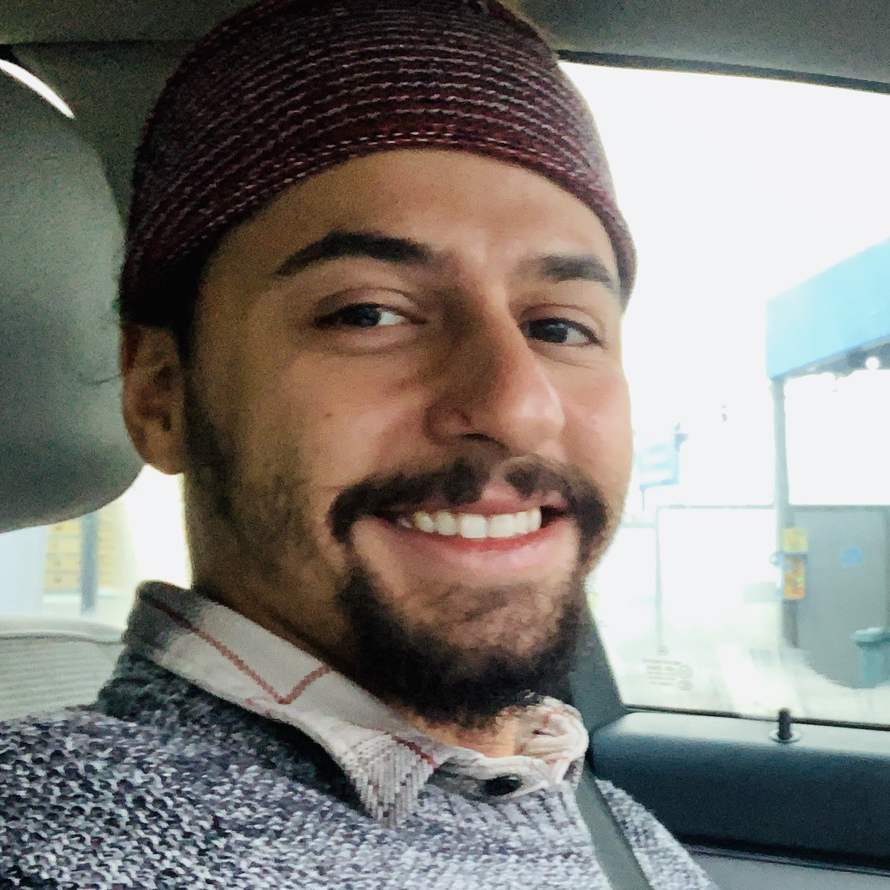

It’s Inanc. I’m from Turkey. Finished my first Bachelor degree - International Trade and Finance - in Istanbul, Kadir Has University. While I was studying there, my first travels outside Turkey has started. I have been around Europe and US to work, study and travel. Meanwhile I have started to explore myself more and find out that I don’t want the life, my degree is going to bring to me. So I have chosen a different path. After my graduation, I have gone to Australia and lived there for 2 years. I have worked in many jobs and traveled in my car for almost a year. Now I’m here in Belgium, studying at Thomas More to be what I really want to be!
EDUCATION
- Kadir Has University
- International Trade and Finance
-
VGTU Lithuania (via Exchange Program)
- Economy
- Thomas More
- Application Development
EMPLOYMENT HISTORY :
- Photographer (4 months) Colorvision / Universal Studios Hollywood
(Location : Los Angeles)
- Taking photos for the guests at the entertainment area of the studios.
- Kitchen Hand (4 months) Small Axe Kitchen (Location : Melbourne)
- Washing dishes
- Helping the kitchen when necessary
- Cleaning food products such as veggies and fruits and making them ready for use.
- Delivery (5 months) Uber Eats
- I was doing deliveries as an extra job while working at Small Axe Restaurant.
- Casual (1 month) Weddings (Location : Cairns)
- I have worked with a casual employer to arrange wedding events. Duty was to set up the wedding area.
- All-Rounder (5 months) Botanic Gardens Restaurant (Location : Cairns)
- Making espresso coffees.
- Preparing all the products to use from the start of the day.
- Chopping the fruits and veggies, preparing the pies and quiches for the day.
- Waitering and getting the payments.
- Working in the kitchen independently, preparing dishes.
- Washing dishes, cleaning the restaurant at the end of the day.
- Farmworker (1 month) Marreny Vale Orchard (Location: Shepparton)
- Picking, tractor driving.
- Farmworker (4 months) Hilltops Free Range Egg Farm (Location : Boorowa)
- Collecting eggs.
- Taking care of chickens.
- Working unsupervised.
- All-Rounder (5 months) Botanic Gardens Restaurant(Location : Cairns)
- After traveling all around Australia, I have came back to Cairns and got my place in Botanic GardensRestaurant again.
- Delivery full-time (8 months) Takeaway. (Location : Leuven)
- Cook / All-Rounder at RUBA (Location : Leuven)(5 months)
- Making salads, fruits, vegetables ready to use for the day.
- Cooking steak, chicken, potatoes, rice when needed.
- Making sauces daily.
- Waitering and serving customers.
- Making sure that; team is ready for the busy hours.
- Placing orders and making sure that there is no inconvenience about products.
- At the end of the day; cleaning up and making restaurant ready for the next day, closing the restaurant.